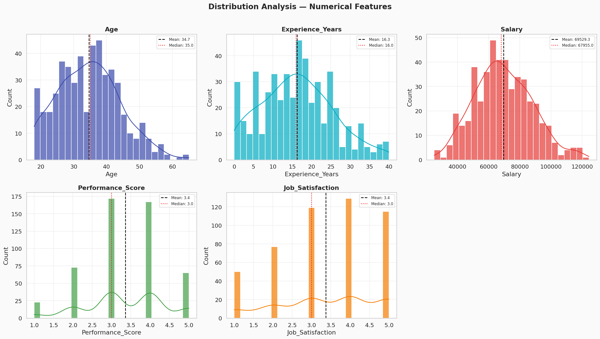
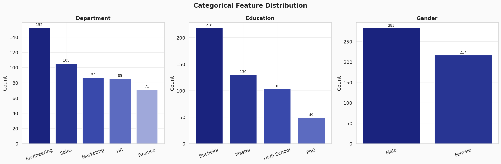
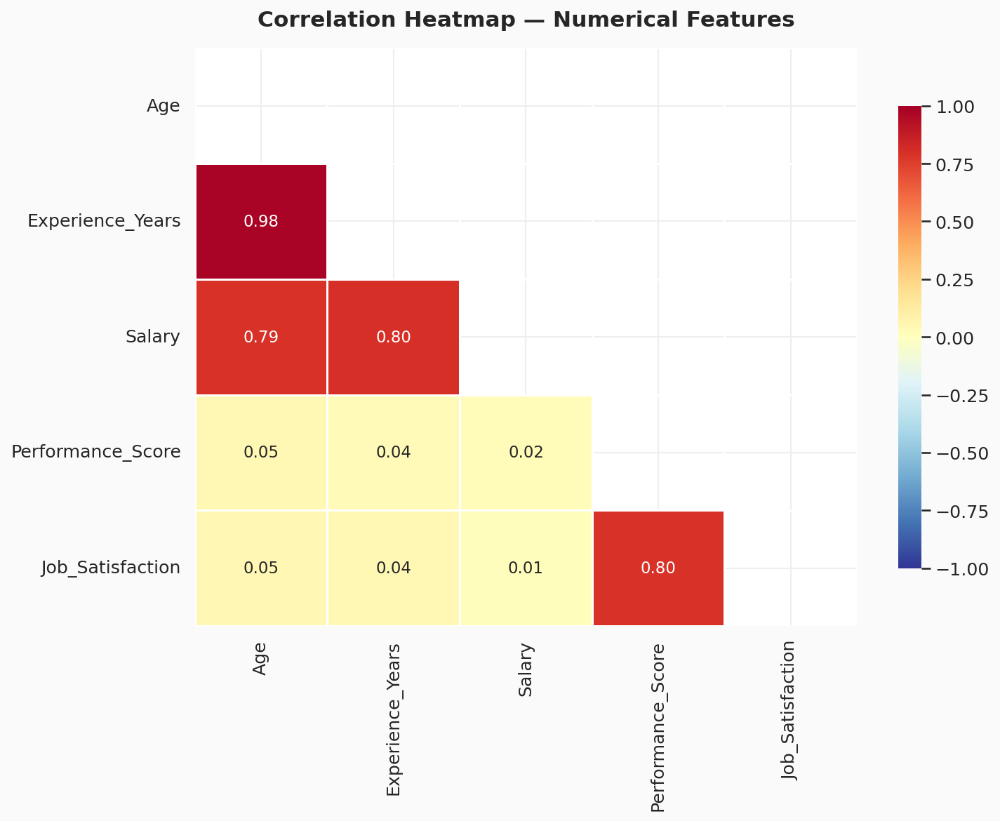
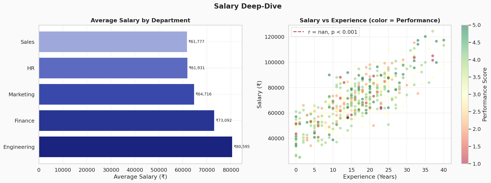
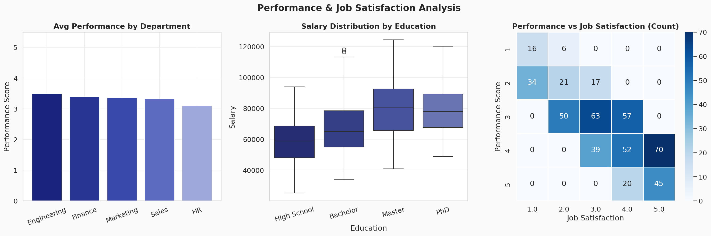
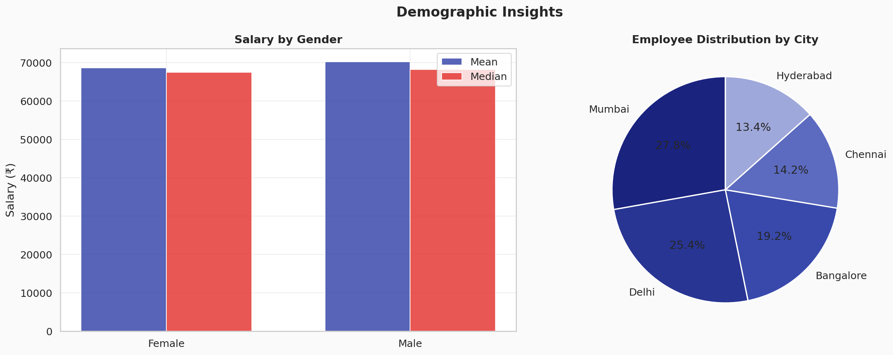

Uncovering patterns in salary, performance, and job satisfaction
This report presents a comprehensive Exploratory Data Analysis (EDA) of an Employee Performance and Salary dataset containing 500 records across 10 features. The analysis aims to uncover relationships between employee demographics, education, experience, and key performance indicators including salary and job satisfaction.
NUMERICAL FEATURES
Age, Experience_Years, Salary, Performance_Score, Job_Satisfaction
CATEGORICAL FEATURES
Gender, Education, Department, City, EmployeeID
DATA QUALITY
15 missing in Salary, 10 in Job_Satisfaction — handled via median imputation. Zero duplicates.
| Feature | Mean | Median | Std Dev | Min | Max |
|---|---|---|---|---|---|
| Age | 34.7 | 35.0 | 9.5 | 18 | 65 |
| Experience (yrs) | 16.3 | 16.0 | 9.3 | 0 | 40 |
| Salary (₹) | 69,529 | 67,955 | 18,534 | 25,000 | 1,24,402 |
| Performance Score | 3.36 | 3.0 | 1.03 | 1 | 5 |
| Job Satisfaction | 3.37 | 3.0 | 1.28 | 1 | 5 |




| Department | Avg Salary (₹) | Avg Performance | Rank |
|---|---|---|---|
| Engineering | 80,096 | 3.50 | 🥇 #1 |
| Finance | 72,730 | 3.39 | #2 |
| Marketing | 64,754 | 3.37 | #3 |
| HR | 62,072 | 3.09 | #4 |
| Sales | 61,836 | 3.32 | #5 |


This EDA reveals that experience and education are the two most influential drivers of employee salary, with experience carrying nearly twice the predictive weight. The strong link between performance scores and job satisfaction points to a positive reinforcement loop that HR teams can leverage. Engineering stands out as the highest-performing and highest-compensated department.
Recommendations: Organizations should invest in skill-development programs to accelerate functional experience, particularly for junior employees. The positive performance–satisfaction relationship suggests that recognizing high performers with non-monetary rewards can further boost satisfaction scores. Salary benchmarking across cities should be reviewed, as geographic concentration in Mumbai and Delhi may create cost-of-living disparities.